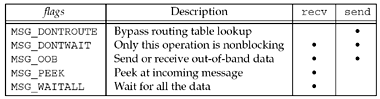

14.3 recv and send Functions
These two functions are similar to the standard read and write functions, but one additional argument is required.
#include <sys/socket.h> | ssize_t recv(int sockfd, void *buff, size_t nbytes, int flags); | ssize_t send(int sockfd, const void *buff, size_t nbytes, int flags); | Both return: number of bytes read or written if OK, –1 on error |
The first three arguments to recv and send are the same as the first three arguments to read and write. The flags argument is either 0 or is formed by logically OR'ing one or more of the constants shown in Figure 14.6.

MSG_DONTROUTE | This flag tells the kernel that the destination is on a locally attached network and not to perform a lookup of the routing table. We provided additional information on this feature with the SO_DONTROUTE socket option (Section 7.5). This feature can be enabled for a single output operation with the MSG_DONTROUTE flag, or enabled for all output operations for a given socket using the socket option. | MSG_DONTWAIT | This flag specifies nonblocking for a single I/O operation, without having to turn on the nonblocking flag for the socket, perform the I/O operation, and then turn off the nonblocking flag. We will describe nonblocking I/O in Chapter 16, along with turning the nonblocking flag on and off for all I/O operations on a socket. | | | This flag is newer than the others and might not be supported on all systems. | MSG_OOB | With send, this flag specifies that out-of-band data is being sent. With TCP, only one byte should be sent as out-of-band data, as we will describe in Chapter 24. With recv, this flag specifies that out-of-band data is to be read instead of normal data. | MSG_PEEK | This flag lets us look at the data that is available to be read, without having the system discard the data after the recv or recvfrom returns. We will talk more about this in Section 14.7. | MSG_WAITALL | This flag was introduced with 4.3BSD Reno. It tells the kernel not to return from a read operation until the requested number of bytes have been read. If the system supports this flag, we can then omit the readn function (Figure 3.15) and replace it with the following macro:
#define readn(fd, ptr, n) recv(fd, ptr, n,
 MSG_WAITALL) MSG_WAITALL)
Even if we specify MSG_WAITALL, the function can still return fewer than the requested number of bytes if (i) a signal is caught, (ii) the connection is terminated, or (iii) an error is pending for the socket. |
There are additional flags used by other protocols, but not TCP/IP. For example, the OSI transport layer is record-based (not a byte stream such as TCP) and supports the MSG_EOR flag for output operations to specify the end of a logical record.
There is a fundamental design problem with the flags argument: It is passed by value; it is not a value-result argument. Therefore, it can be used only to pass flags from the process to the kernel. The kernel cannot pass back flags to the process. This is not a problem with TCP/IP, because it is rare to need to pass flags back to the process from the kernel. But when the OSI protocols were added to 4.3BSD Reno, the need arose to return MSG_EOR to the process with an input operation. Thus, the decision was made with 4.3BSD Reno to leave the arguments to the commonly used input functions (recv and recvfrom) as-is and change the msghdr structure that is used with recvmsg and sendmsg. We will see in Section 14.5 that an integer msg_flags member was added to this structure, and since the structure is passed by reference, the kernel can modify these flags on return. This also means that if a process needs to have the flags updated by the kernel, the process must call recvmsg instead of either recv or recvfrom.
|